Presvlačenje koje vraća sjaj vašem vozilu i prostoru
Auto sjedišta, volani, ručice mjenjača, motori, gliseri i brodovi. Namještaj za dom, firme, ugostiteljske objekte i ljetne bašte.
iskustva
Sve na čemu se sjedi
Kliknite na kategoriju i pogledajte naše završene radove – prava koža, eko koža, platno i mnogi drugi materijali.
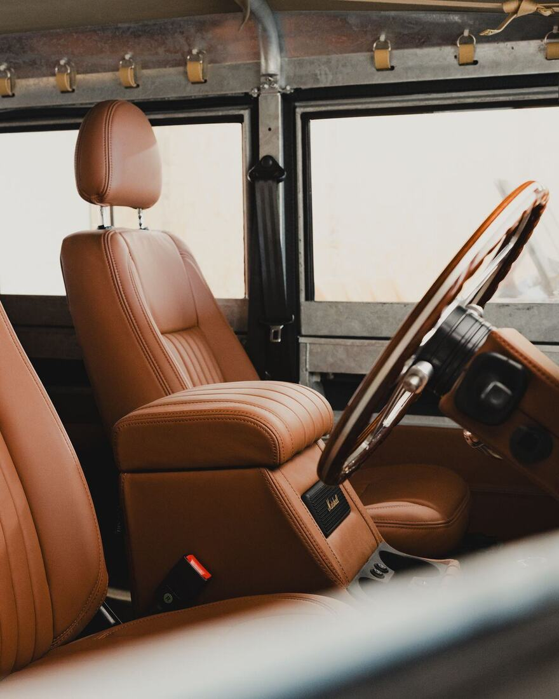
Auto sjedišta
Kožna i platnena sjedišta i nasloni za ruke.
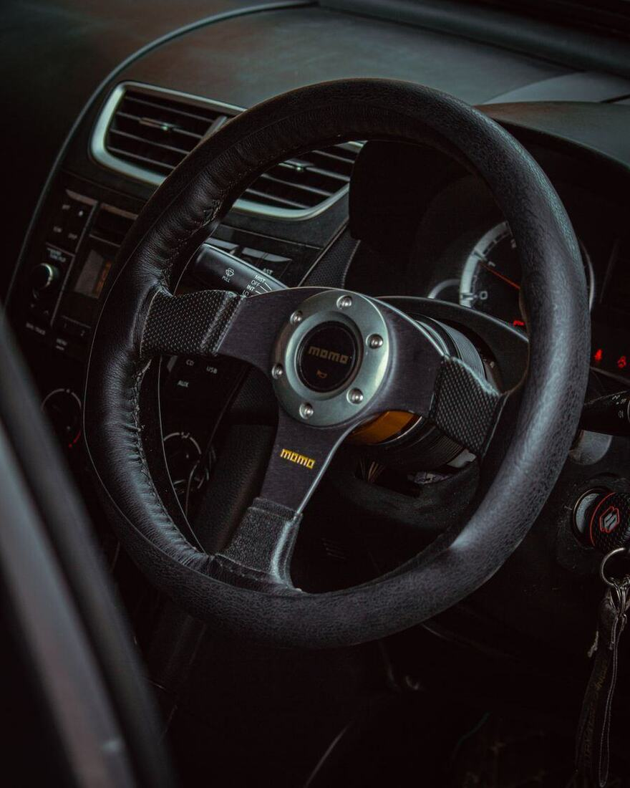
Kožni volani
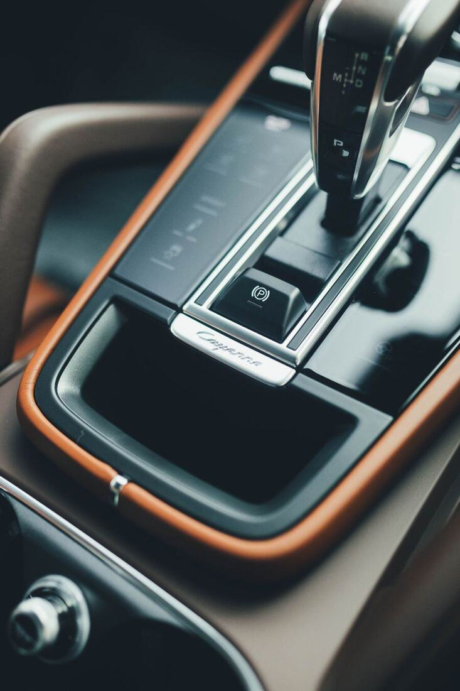
Ručice mjenjača
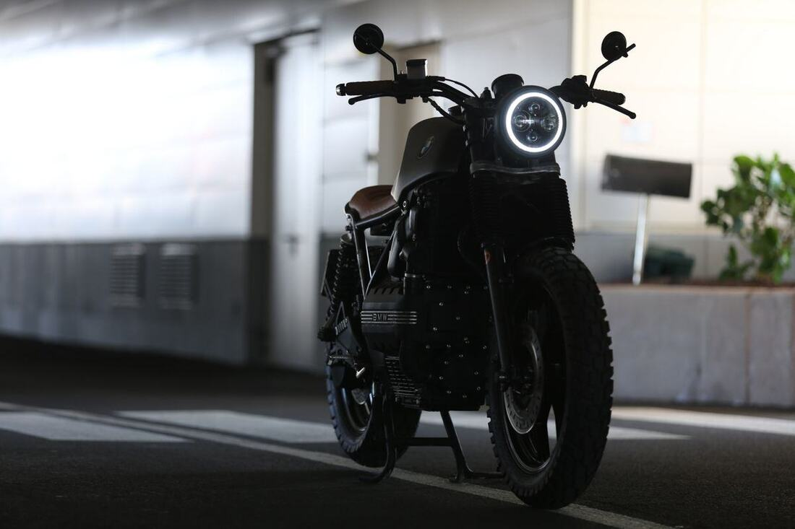
Sjedišta za motore
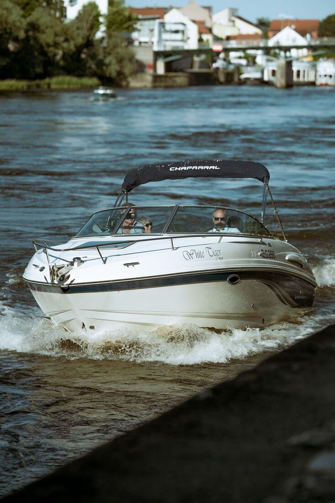
Gliseri i brodovi
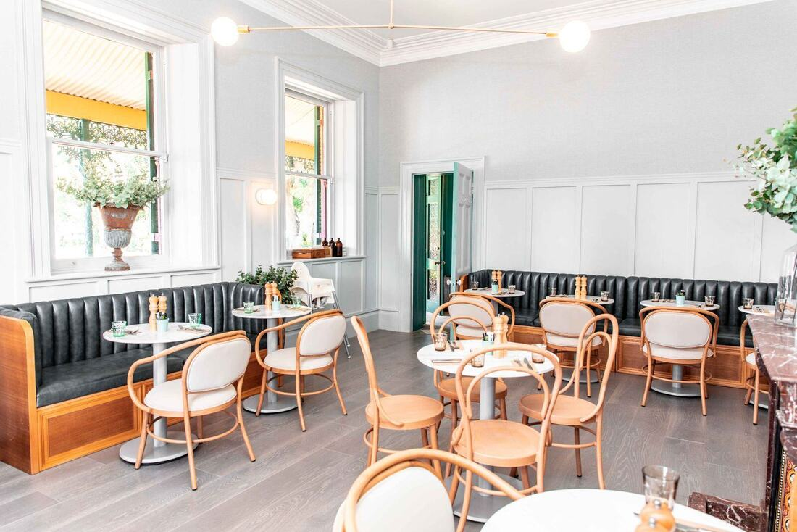
Ugostiteljski objekti
Preuređenje i presvlačenje kompletnog inventara – stolice, separei, barske stolice.
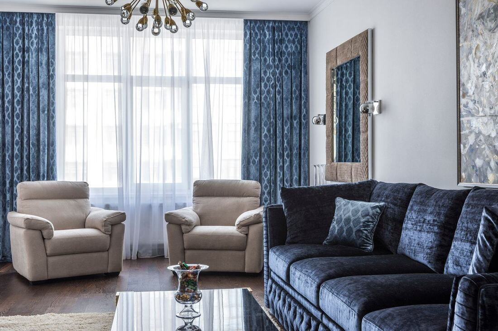
Namještaj i stolice
Garniture, fotelje, trpezarijske stolice.
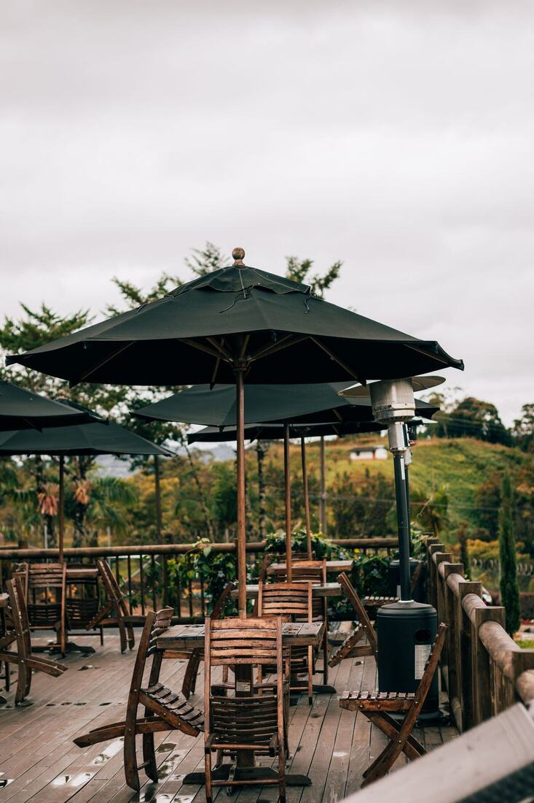
Ljetne bašte
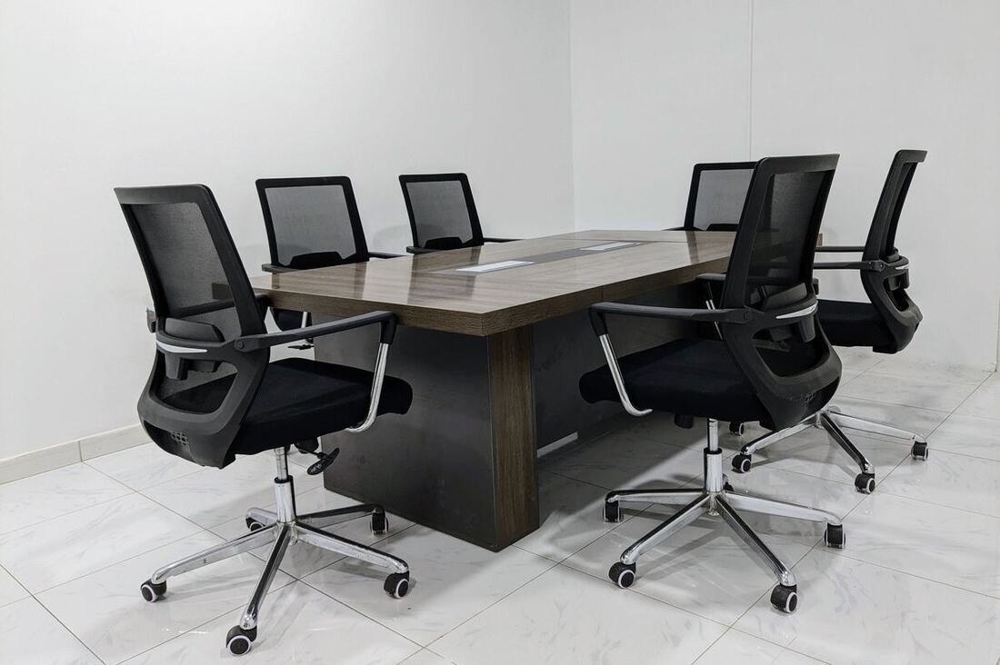
Namještaj u firmama
Materijal po vašoj želji
Pomoći ćemo vam da izaberete materijal i boju prema namjeni i budžetu.
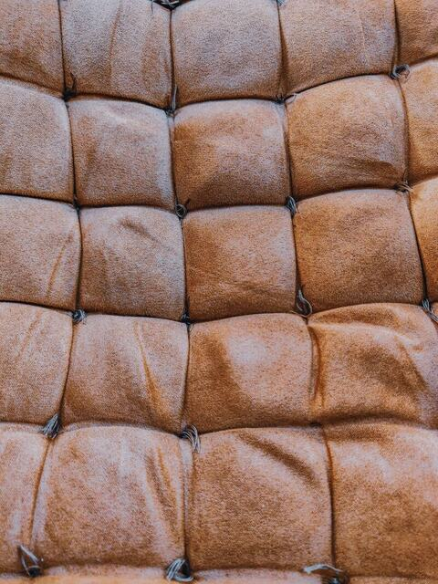
Prava koža
Luksuzan izgled i dugotrajnost.
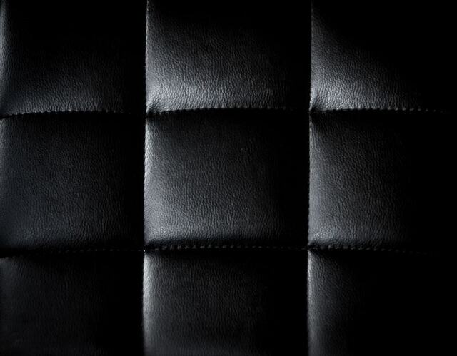
Eko koža
Izgled kože, lako održavanje.
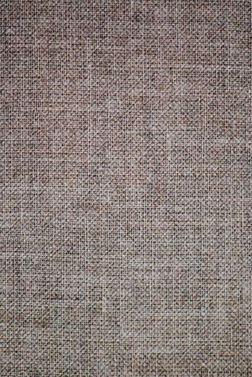
Platno
Mnogo boja i dezena.
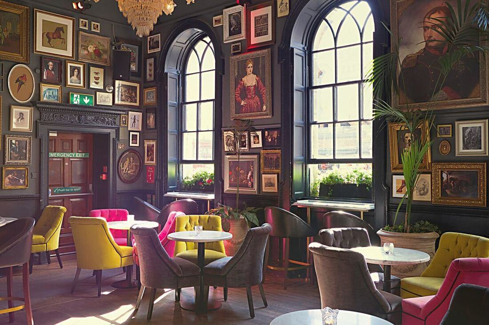
I mnogi drugi
Pitajte nas za vašu ideju.
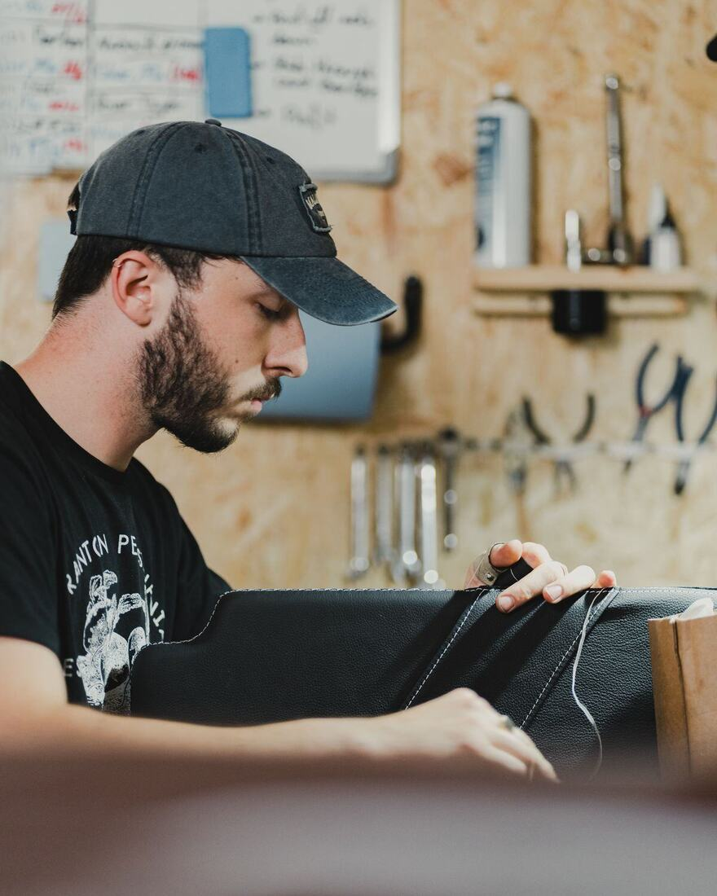
Iskustvo koje se vidi u svakom šavu
Već 40 godina presvlačimo sjedišta i namještaj. Radimo za vlasnike automobila, motora i plovila, za domaćinstva, firme i ugostiteljske objekte.
Svaki posao radimo ručno i pažljivo, od krojenja do posljednjeg šava.
Pošaljite sliku – dobijte ponudu
Fotografišite ono što želite presvući i pošaljite nam na Viber ili WhatsApp.
+387 00 000 000